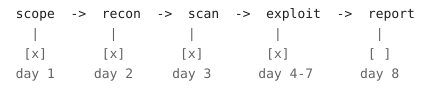

How an engagement actually runs.
Eight phases, roughly eight working days, built on OWASP WSTG, ASVS and PTES. Nothing reaches your report without a proof-of-concept and a second tester's review.

The eight phases
Roughly eight working days for a mid-size application. You get a shared channel with the testers from day one — findings reach you as they are confirmed, not in a document three weeks later.

We agree targets, roles, credentials, testing windows and the rules of engagement in writing. Out-of-scope assets are named explicitly. You get a fixed price and a firm delivery date before anything is signed.
Mapping the real attack surface, which is reliably larger than the one in the documentation. Passive collection first, then active enumeration within the agreed scope.
An automated sweep tuned to your stack, used to establish a baseline and free up human time for the work that needs judgement. Nothing from this phase reaches your report unverified.
The part that earns the engagement. Business logic, chained flaws and authorisation depth — the categories no scanner reaches, because they require understanding what your application is for.
Every claimed finding gets a proof-of-concept. If we cannot demonstrate it, it does not go in the report as a vulnerability — it goes in the observations appendix.
A second tester reviews the finding set. False positives are removed, severities are challenged, and duplicates are merged before anything reaches you.
Two audiences, one document. An executive summary that a board can read without a translator, and a technical body an engineer can work straight from.
Once you have shipped fixes we re-run the full finding set and issue an updated report showing what closed. Included in the engagement price, not billed separately.
Standards we work to
The methodology above is ours. It is built on published frameworks so that our coverage is auditable rather than something you have to take on trust.
Rules of engagement
Every engagement runs under a written set of rules agreed during scoping. These are our defaults; they can be tightened, and some can be relaxed with explicit written authorisation.
Excluded by default
- Denial-of-service and resource-exhaustion testing
- Social engineering, phishing and physical intrusion
- Testing against third-party services you do not control
- Any action that destroys, corrupts or exfiltrates real customer data
Always in force
- Testing happens only within the agreed window and source addresses
- Critical findings are reported immediately, not held for the report
- An emergency stop contact can halt testing within fifteen minutes
- Evidence is encrypted at rest and destroyed on request after the retest
If we find evidence that you are already compromised, testing stops and your escalation contact is called the same hour. That has happened. It is not on the price list.
Want the long version?
We will walk you through the methodology against your actual stack on a 30-minute call, before you commit to anything.